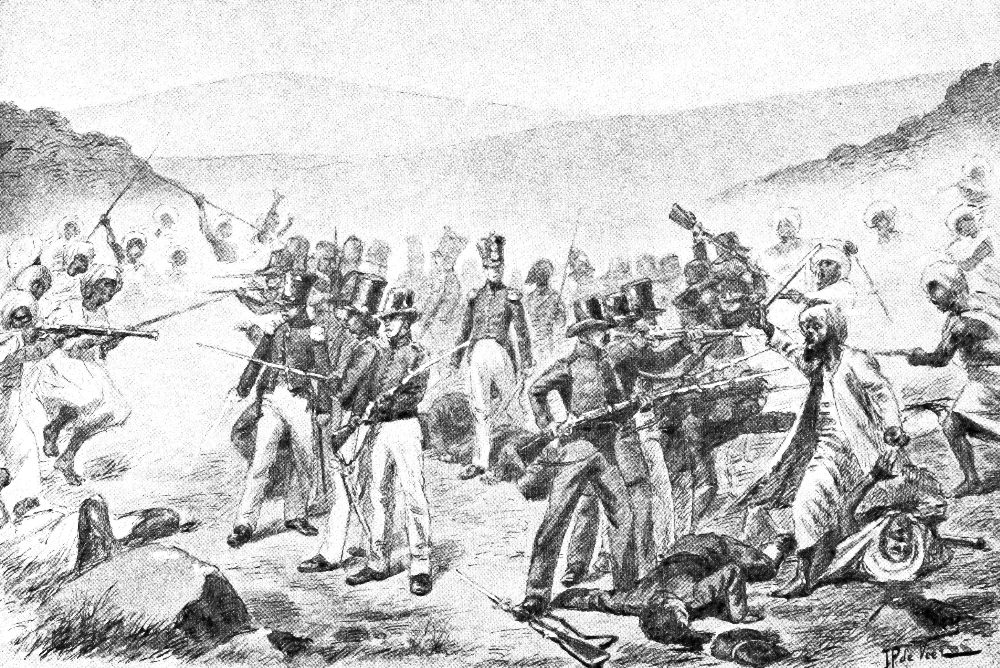
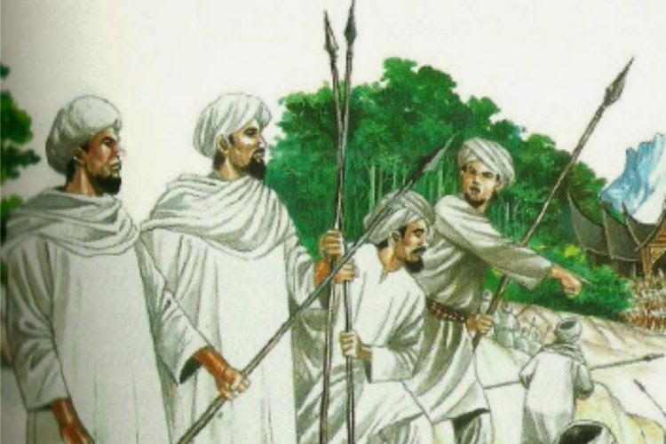

Latar Belakang
Latar belakang perlawanan ini melibatkan perseteruan antara dua kelompok yang berbeda dalam masyarakat Minangkabau pada masa itu. Di satu sisi, ada kelompok tradisionalis Minangkabau yang mengikuti adat istiadat setempat dan mendukung penguasa lokal (raja-raja adat). Di sisi lain, ada kelompok Padri yang berusaha menggantikan adat istiadat lokal dengan ajaran Islam yang lebih ketat dan menginginkan pengaruh yang lebih besar di wilayah tersebut.
Pada tahun 1803, pasukan Padri yang dipimpin oleh Abdul Wahid mengambil alih kekuasaan di beberapa wilayah Minangkabau dan mendirikan negara Islam di sana. Namun, ini menyebabkan konflik dengan kelompok tradisionalis dan para penguasa adat setempat. Imam Bonjol, salah satu pemimpin tradisionalis Minangkabau, memimpin perlawanan melawan pasukan Padri dan Belanda.
Faktor Umum
1. Pertentangan Ideologis: Perang Padri merupakan hasil dari pertentangan ideologis antara kelompok yang lebih tradisionalis, yang mempertahankan adat istiadat setempat, dan kelompok Padri yang mengadvokasi penerapan ajaran Islam yang lebih ketat. Pertentangan ini menciptakan konflik ideologis yang mendasari perang.
2. Kompleksitas Sosial Minangkabau: Masyarakat Minangkabau pada waktu itu sangat kompleks, dengan berbagai suku, kelompok, dan klan. Pertentangan sosial dan ekonomi di antara kelompok-kelompok ini turut memicu konflik.
3. Pengaruh Asing: Belanda ikut campur dalam konflik ini dengan mendukung kelompok tradisionalis Minangkabau melawan kelompok Padri. Campur tangan Belanda menambah dimensi internasional pada konflik ini.

Faktor Khusus
Latar belakang perlawanan ini melibatkan perseteruan antara dua kelompok yang berbeda dalam masyarakat Minangkabau pada masa itu. Di satu sisi, ada kelompok tradisionalis Minangkabau yang mengikuti adat istiadat setempat dan mendukung penguasa lokal (raja-raja adat). Di sisi lain, ada kelompok Padri yang berusaha menggantikan adat istiadat lokal dengan ajaran Islam yang lebih ketat dan menginginkan pengaruh yang lebih besar di wilayah tersebut.
Pada tahun 1803, pasukan Padri yang dipimpin oleh Abdul Wahid mengambil alih kekuasaan di beberapa wilayah Minangkabau dan mendirikan negara Islam di sana. Namun, ini menyebabkan konflik dengan kelompok tradisionalis dan para penguasa adat setempat. Imam Bonjol, salah satu pemimpin tradisionalis Minangkabau, memimpin perlawanan melawan pasukan Padri dan Belanda.